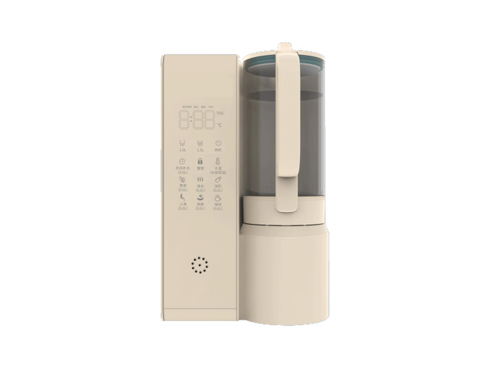
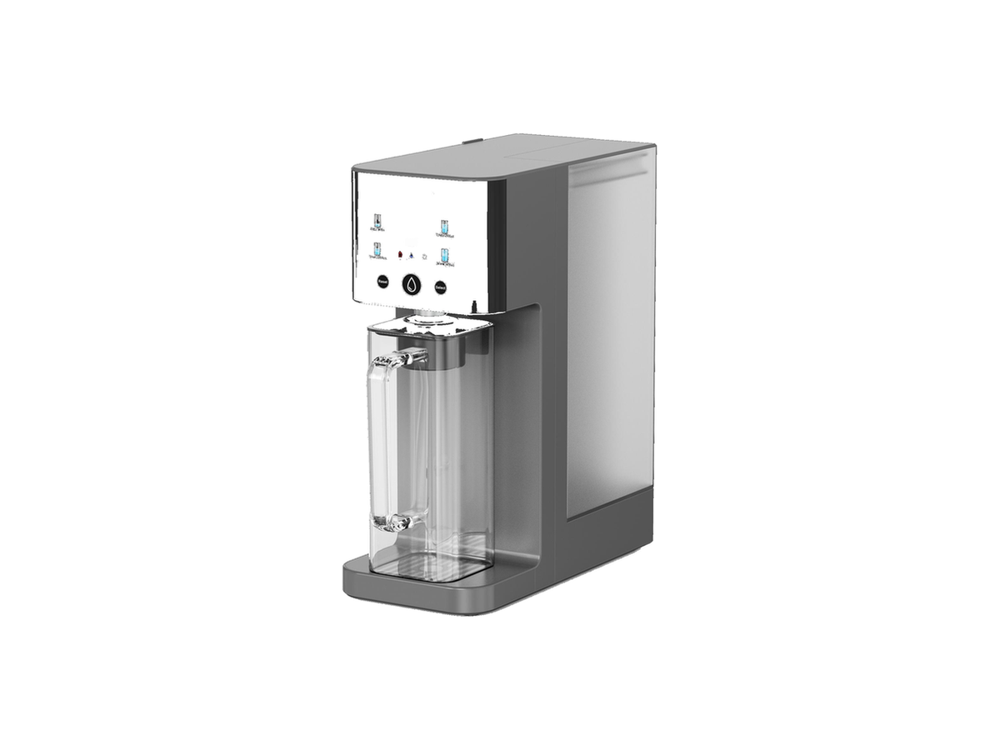
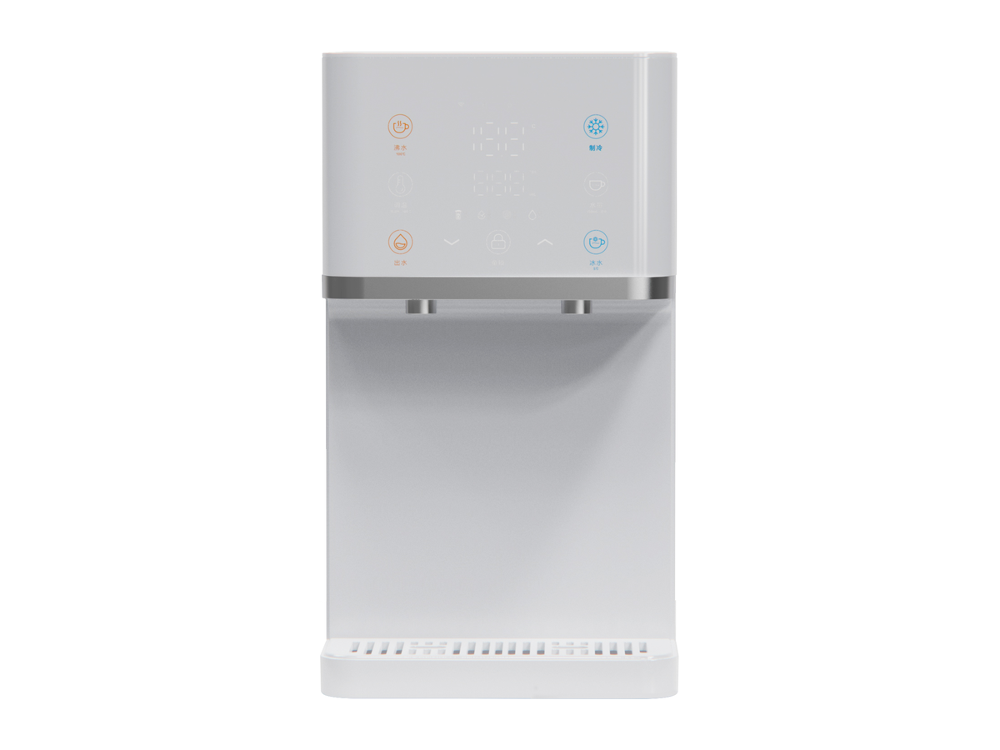
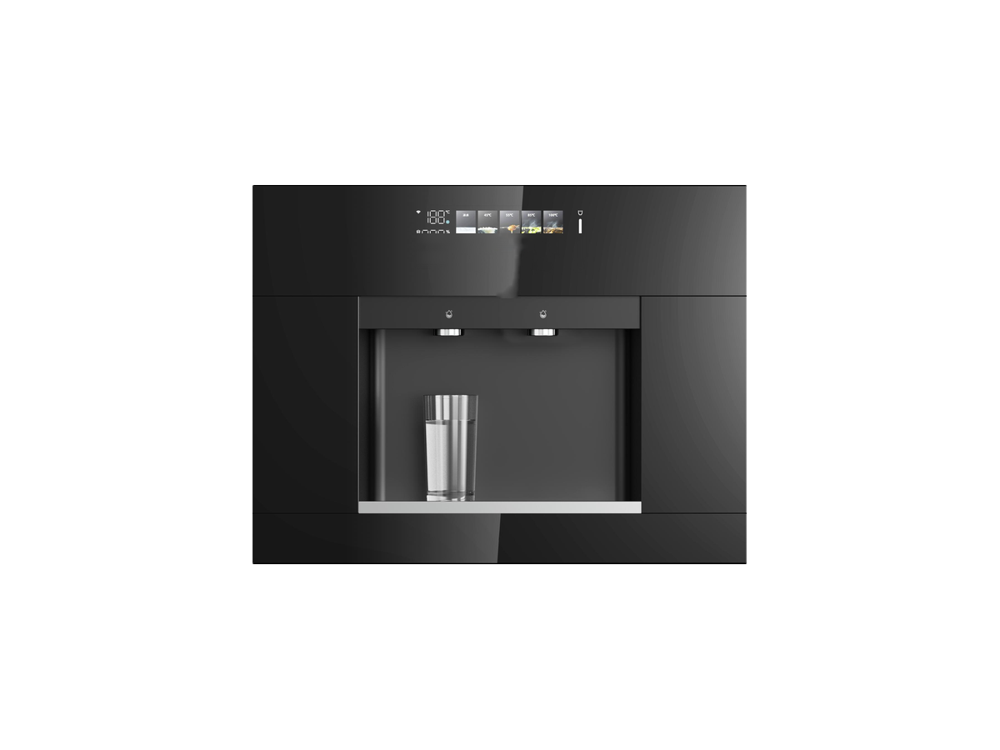

厨下式
厨下式RP-U07
400–600 GPD 厨下式 RO 净水器
SKU: RP-U07
起订量：询价时确认
以下均为已收录的目录型号，不包含候选型号。
46 款型号
没有符合条件的型号，请尝试其他 SKU 或清除筛选。
热水／冷水／制冰是现有型号的精选筛选视图，具体功能因型号而异。
厨下式400–600 GPD 厨下式 RO 净水器
SKU: RP-U07
起订量：询价时确认
 厨下式
厨下式储热式厨下 RO 净水器
SKU: RP-U08
起订量：询价时确认
 厨下式
厨下式大产水量前置换芯 RO 净水器
SKU: RP-U09
起订量：询价时确认
 厨下式
厨下式三滤芯 RO 净水器
SKU: RP-U11
起订量：询价时确认
 厨下式
厨下式免工具抽拉换芯 RO 系统
SKU: RP-U01
起订量：询价时确认
 厨下式
厨下式双驱扩展产水 RO 系统
SKU: RP-U06
起订量：询价时确认
 厨下式
厨下式紧凑型双滤芯 RO 净水器
SKU: RP-U12
起订量：询价时确认
 厨下式
厨下式纤薄双出水 RO 净水器
SKU: RP-U14
起订量：询价时确认
 厨下式
厨下式厨下式富氢水 RO 净水器
SKU: RP-U04
起订量：询价时确认
 厨下式
厨下式配即热龙头及冷水功能的 RO 系统
SKU: RP-U02
起订量：询价时确认
 厨下式
厨下式大产水量家用 RO 净水器
SKU: RP-U03
起订量：询价时确认
 厨下式
厨下式紧凑型双滤芯 RO 平台
SKU: RP-U05
起订量：询价时确认
 厨下式
厨下式厨下式制冷配套设备
SKU: RP-U15
起订量：询价时确认
 厨下式
厨下式不锈钢即热水龙头
SKU: RP-U16
起订量：询价时确认
 厨下式
厨下式双筒大流量前置过滤器
SKU: RP-U17
起订量：询价时确认
 台式净水器
台式净水器带加热壶的 RO 净水器
SKU: RP-C07
起订量：询价时确认
 台式净水器
台式净水器一体式滤芯台式净水器
SKU: RP-C08
起订量：询价时确认
 台式净水器
台式净水器制冰冷热水 RO 净水器
SKU: RP-C09
起订量：询价时确认
 台式净水器
台式净水器压缩机制冷台式 RO 净水器
SKU: RP-C10
起订量：询价时确认
 台式净水器
台式净水器带现磨咖啡功能的 RO 净水器
SKU: RP-C11
起订量：询价时确认
 台式净水器
台式净水器台式净水器
SKU: RP-C12
起订量：询价时确认
 台式净水器
台式净水器即热式 RO 饮水机
SKU: RP-C13
起订量：询价时确认
 台式净水器
台式净水器免安装即热净水器
SKU: RP-C03
起订量：询价时确认
 台式净水器
台式净水器带可拆卸水壶的即热 RO 净水器
SKU: RP-C01
起订量：询价时确认
 台式净水器
台式净水器台式富氢水 RO 饮水机
SKU: RP-C04
起订量：询价时确认
 台式净水器
台式净水器气泡水系列 — 两种变体（RP-C14 / RP-C05）
SKU: RP-C14
起订量：询价时确认
 台式净水器
台式净水器气泡水与富氢水台式系列 (P90 / P90-1)
SKU: RP-C15
起订量：询价时确认

台式净水器台式养生壶净水器
SKU: RP-C17
起订量：询价时确认

台式净水器极简玻璃壶台式 RO 净水器
SKU: RP-C19
起订量：询价时确认

台式净水器制冷型台式 RO 净饮机
SKU: RP-C21
起订量：询价时确认

台式净水器嵌入式冷热净水器（可选制冰）
SKU: RP-C24
起订量：询价时确认
 软水
软水紧凑型厨下式软水机
SKU: RP-U18
起订量：询价时确认
 软水
软水分罐式软水机系列 — 32,000 / 48,000 / 64,000 grain
SKU: RP-W01
起订量：询价时确认
 淋浴
淋浴手持式淋浴过滤器
SKU: RP-S01
起订量：询价时确认
 淋浴
淋浴矩形淋浴过滤器
SKU: RP-S03
起订量：询价时确认
 淋浴
淋浴多模式淋浴过滤器 — 四款型号
SKU: RP-S07
起订量：询价时确认
 淋浴
淋浴便携式淋浴过滤器
SKU: RP-S10
起订量：询价时确认
 淋浴
淋浴管路式淋浴前置过滤器
SKU: RP-S11
起订量：询价时确认
 淋浴
淋浴快锁式淋浴过滤器
SKU: RP-S12
起订量：询价时确认
 淋浴
淋浴淋浴过滤系统 — 单支或多支装
SKU: RP-S14
起订量：询价时确认
 龙头
龙头经典龙头过滤器
SKU: RP-F01
起订量：询价时确认
 龙头
龙头360° 可旋转龙头过滤器
SKU: RP-F02
起订量：询价时确认
 龙头
龙头碳纤维龙头过滤器
SKU: RP-F06
起订量：询价时确认
 龙头
龙头带滤芯寿命显示的龙头过滤器
SKU: RP-F08
起订量：询价时确认
 龙头
龙头龙头式净水器 — 一体式与分体式
SKU: RP-F10
起订量：询价时确认
请从预期用途、本地需求、安装条件和经核实的型号要求入手。本目录不是便携产品认证或市场规模报告。便携式净水器市场项目的适用性：按订单确认（Confirmed per order）。